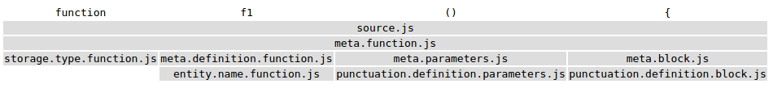
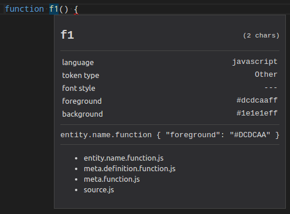
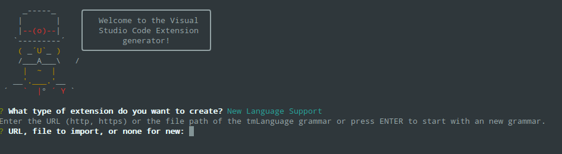
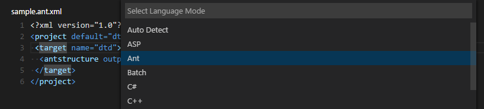

Themes, Snippets and Colorizers
Custom color and icons themes, snippets and language syntax
colorizers bring an editor to life. There are lots of existing
TextMate customization files available and VS Code lets you
easily package and reuse these. You can directly use
.tmTheme, .tmSnippets, and
.tmLanguage files in your extensions and share
them in the extension
Marketplace. This topic describes how to reuse TextMate files as well as
create and share your own themes, snippets and colorizers.
Adding a new Color Theme
Colors visible in the VS Code user interface fall in two categories:
- Workbench colors used in views and editors, from the Activity Bar to the Status Bar. A complete list of all these colors can be found in the color reference.
- Syntax highlighting colors used for source code in the editor. The theming of these colors is different as syntax colorization is based on TextMate grammars and TextMate themes.
Workbench colors
The easiest way to create a new workbench color theme is to start with an existing color theme and customize it:
- Switch to the color theme that you want to modify.
-
Open the
settings
and make changes to view and editor colors using the
workbench.colorCustomizations. Changes are applied live to your VS Code instance and no refreshing or reloading is necessary. - A complete list of all themable colors can be found in the color reference.
Syntax highlighting colors
For syntax highlighting colors, there are two approaches. You
just simply reference an existing TextMate theme (.tmTheme
file) from the community, or you can come up with your own
theming rules. The easiest way is to start with an existing
theme and customize it:
-
Switch to the color theme to customize and use the
editor.tokenColorCustomizationssettings. Changes are applied live to your VS Code instance and no refreshing or reloading is necessary. - The setting supports a simple mode with a set of common token types such as 'comments', 'strings' and 'numbers' available. If you want to color more than than, you need to use textMate theme rules directly.
TextMate theme rules
To write TextMate theme rules, you need to know about TextMate grammars and scopes.
TextMate grammars consist of a set of regular
expression that are used create a syntax tree out of the
source code. Each tree node spans a source range and
represents a scope. Scopes have a name and stand
for either code sections (such as functions, blocks, comments)
or symbols (for example keywords, numbers, operators).
Here's an example of the scope hierarchy generated for a JavaScript code sample:
function f1() {

Each scope name consists of segments separated by dots. The
last segment is the name of the language the symbol belongs
to: entity.name.function.js.
A good overview of scope names that TextMate grammars typically generate can be found here.
The list of scope names active at a given offset are the input for syntax highlighting.
Text Mate themes describe the theming rules used for syntax highlighting. Each rule consists of one or more scope selectors and a set of styles: colors (foreground & background) and font styles (bold, italics and underline).
To evaluate the style of a symbol at a given offset, the scopes at that offset are computed. The theming rules are then processed first to last. The rule's scope selectors are matched against that set of scopes. The rule with the most specific match wins.
Here are some example theming rules. The
scope property lists the rules scope selectors.
The setting property describes the styles to
apply when the rule wins. The name is just used
for documentation.
-
TextMate themes assign a set of styles to one or more scopes. The styles are the foreground color, the background color and bold, italics and underline. A theme consist of a set of rules. To evaluate the style of a symbol, the rules are processed first to last and each scope selector is matched against to symbols scope and parent scopes. The most specific rule is used for styling the symbol.
-
Scope selector support prefix matching and matching against parent scopes
{
"name": "Variables",
"scope": "variable",
"settings": {
"foreground": "#dc3958",
"fontStyle": "bold underline"
}
},
{
"name": "Functions",
"scope": [
"entity.name.function",
"meta.selector.css entity.name.tag",
"entity.name.method - source.java"
],
"settings": {
"foreground": "#8ab1b0",
}
}
-
variablematches all scopes that start withvariable:variable.js,variable.parameter.java... -
meta.selector.css entity.name.tagmatches all scopes that start withentity.name.tagand have a parent scope that matchesmeta.selector.css -
entity.name.method - source.javamatches all scopes that start withentity.name.methodbut are not inside a parent scope that matchessource.java - Learn more about scope selectors here.
You can use the
Developer Tools: Inspect TM Scopes command
from the
Command Palette
(kb(workbench.action.showCommands)) to inspect
the scopes of a token at the cursor and to see which theming
rule has been applied.

Create a new color theme
- Generate a theme file using the Generate Color Theme from Current Settings command from the Command Palette
- Use VS Code's Yeoman extension generator, yo code, to generated a new theme extension.
- If you customized a theme as described above, select 'Start fresh'.

- Copy the theme file generated from your settings to the new extension.
-
To use a existing TextMate theme, you can tell the extension
generator to import a TextMate theme file and package it for
use in VS Code. Alternatively, if you have already
downloaded the theme, replace the
tokenColorssection with a link to the.tmThemefile to use.
{
"type": "dark",
"colors": {
"editor.background": "#1e1e1e",
"editor.foreground": "#d4d4d4",
"editorIndentGuide.background": "#404040",
"editorRuler.foreground": "#333333",
"activityBarBadge.background": "#007acc",
"sideBarTitle.foreground": "#bbbbbb"
},
"tokenColors": "./Diner.tmTheme"
}
Tip: ColorSublime has hundreds of existing TextMate themes to choose from. Pick a theme you like and copy the Download link to use in the Yeoman generator or into your extension. It will be in a format like
"http://colorsublime.com/theme/download/(number)"
Test a new color theme
To try out the new theme, copy the generated theme folder to a
new folder under
your .vscode/extensions folder
and restart VS Code.
Open the Color Theme picker theme with File > Preferences > Color Theme and you can see your theme in the dropdown. Arrow up and down to see a live preview of your theme.

After making changes to any theme file, it is necessary reload
VS Code with Reload Window.
Publishing a Theme to the Extension Marketplace
If you'd like to share your new theme with the community, you can publish it to the Extension Marketplace. Use the vsce publishing tool to package your theme and publish it to the VS Code Marketplace.
Tip: To make it easy for users to find your theme, include the word "theme" in the extension description and set the
CategorytoThemein yourpackage.json.
We also have recommendations on how to make your extension look great on the VS Code Marketplace, see Marketplace Presentation Tips.
Adding a new Icon Theme
You can create your own icon theme from icons (preferably SVG) and from icon fonts. As example, check out the two built-in themes: Minimal and Seti.
To begin, create a VS Code extension and add the
iconTheme contribution point.
"contributes": {
"iconThemes": [
{
"id": "turtles",
"label": "Turtles",
"path": "./fileicons/turtles-icon-theme.json"
}
]
}
The id is the identifier for the icon theme. It
is currently only used internally. In the future, it might be
used in the settings, so make it unique but also readable.
label is shown in the icon theme picker
drop-down. The path points to a file in the
extension that defines the icon set. If your icon set name
follows the *icon-theme.json name scheme, you
will get completion support and hovers in VS Code.
Icon Set File
The icon set file is a JSON file consisting file icon associations and icon definitions.
An icon association maps a file type ('file', 'folder', 'json-file'...) to an icon definition. Icon definitions define where the icon is located: That can be an image file or also glyph in a font.
Icon definitions
The iconDefinitions section contains all
definitions. Each definition has an id, which will be used to
reference the definition. A definition can be referenced also
by more than one file association.
"iconDefinitions": {
"_folder_dark": {
"iconPath": "./images/Folder_16x_inverse.svg"
}
}
This icon definition above contains a definition with the
identifier _folder_dark.
The following properties are supported:
-
iconPath: When using a svg/png: the path to the image. -
fontCharacter: When using a glyph font: The character in the font to use. -
fontColor: When using a glyph font: The color to use for the glyph. -
fontSize: When using a font: The font size. By default, the size specified in the font specification is used. Should be a relative size (e.g. 150%) to the parent font size. -
fontId: When using a font: The id of the font. If not specified, the first font specified in font specification section will be picked.
File association
Icons can be associated to folders, folder names, files, file extensions, file names and language ids.
Additionally each of these associations can be refined for 'light' and 'highContrast' color themes.
Each file association points to an icon definition.
"file": "_file_dark",
"folder": "_folder_dark",
"folderExpanded": "_folder_open_dark",
"folderNames": {
".vscode": "_vscode_folder",
},
"fileExtensions": {
"ini": "_ini_file",
},
"fileNames": {
"win.ini": "_win_ini_file",
},
"languageIds": {
"ini": "_ini_file"
},
"light": {
"folderExpanded": "_folder_open_light",
"folder": "_folder_light",
"file": "_file_light",
"fileExtensions": {
"ini": "_ini_file_light",
}
},
"highContrast": {
}
-
fileis the default file icon, shown for all files that don't match any extension, filename or language id. Currently all properties defined by the definition of the file icon will be inherited (only relevant for font glyphs, useful for the fontSize). -
folderis the folder icon for collapsed folders, and iffolderExpandedis not set, also for expanded folders. Icons for specific folder names can be associated using thefolderNamesproperty. The folder icon is optional. If not set, no icon will be shown for folder. -
folderExpandedis the folder icon for expanded folders. The expanded folder icon is optional. If not set, the icon defined forfolderwill be shown. -
folderNamesassociates folder names to icons. The key of the set is the folder name, not including any path segments. Patterns or wildcards are not supported. Folder name matching is case insensitive. -
folderNamesExpandedassociates folder names to icons for expanded folder. The key of the set is the folder name, not including any path segments. Patterns or wildcards are not supported. Folder name matching is case insensitive. -
languageIdsassociates languages to icons. The key in the set is the language id as defined in the language contribution point. The language of a file is evaluated based on the file extensions and file names as defined in the language contribution. Note that the 'first line match' of the language contribution is not considered. -
fileExtensionsassociates file extensions to icons. The key in the set is the file extension name. The extension name is a file name segment after a dot (not including the dot). File names with multiple dots such aslib.d.tscan match multiple extensions; 'd.ts' and 'ts'. Extensions are compared case insensitive. -
fileNamesassociates file names to icons. The key in the set is the full file name, not including any path segments. Patterns or wildcards are not supported. File name matching is case insensitive. A 'fileName' match is the strongest match, and the icon associated to the file name will be preferred over an icon of a matching fileExtension and also of a matching language Id.
A file extension match is preferred over a language match, but is weaker than a file name match.
The light and the
highContrast section have the same file
association properties as just listed. They allow to override
icons for the corresponding themes.
Font definitions
The 'fonts' section lets you declare any number of glyph fonts that you want to use. You can later reference these font in the icon definitions. The font declared first will be used as the default if an icon definition does not specify a font id.
Copy the font file into your extension and set the path accordingly. It is recommended to use WOFF fonts.
- Set 'woff' as the format.
- the weight property values are defined here.
- the style property values are defined here.
- the size should be relative to the font size where the icon is used. Therefore always use percentage.
"fonts": [
{
"id": "turtles-font",
"src": [
{
"path": "./turtles.woff",
"format": "woff"
}
],
"weight": "normal",
"style": "normal",
"size": "150%"
}
],
"iconDefinitions": {
"_file": {
"fontCharacter": "\\E002",
"fontColor": "#5f8b3b",
"fontId": "turtles-font"
}
}
Using TextMate Snippets
You can also add TextMate snippets (.tmSnippets) to your VS
Code installation using the
yo code
extension generator. The generator has an option
New Code Snippets which lets you point to a
folder containing multiple .tmSnippets files and they will be
packaged into a VS Code snippet extension. The generator also
supports Sublime snippets (.sublime-snippets).
The final generator output has two files: an extension
manifest package.json which has metadata to
integrate the snippets into VS Code and a
snippets.json file which includes the snippets
converted to the VS Code snippet format.
.
├── snippets // VS Code integration
│ └── snippets.json // The JSON file w/ the snippets
└── package.json // extension's manifest
Copy the generated snippets folder to a new folder under
your .vscode/extensions folder
and restart VS Code.
Sharing Your Snippets in the Marketplace
Once you have created your snippets and tested them out, you can share them with the community.
To do this, you need to create a snippet extension. If you've
used the yo code extension generator, your
snippet extension is ready to be published.
If you want to share user snippets, you'll need to package your snippet json file along with an extension manifest which has the necessary metadata to integrate the snippets into VS Code.
Depending on your platform, your user snippets file is located here:
-
Windows
%APPDATA%\Code\User\snippets\(language).json -
Mac
$HOME/Library/Application Support/Code/User/snippets/(language).json -
Linux
$HOME/.config/Code/User/snippets/(language).json
where (language).json depends on the targeted
language of the snippets (e.g. markdown.json for
Markdown snippets). Create a new folder for your extension and
copy your snippet file to a
snippets subdirectory.
Now add an extension manifest package.json file to the
extension folder. The snippet extension manifest follows the
structure defined in the
Extension Manifest
reference and provides a
snippets contribution.
Below is an example manifest for Markdown snippets:
{
"name": "DM-Markdown",
"publisher": "mscott",
"description": "Dunder Mifflin Markdown snippets",
"version": "0.1.0",
"engines": { "vscode": "0.10.x" },
"categories": ["Snippets"],
"contributes": {
"snippets": [
{
"language": "markdown",
"path": "./snippets/markdown.json"
}
]
}
}
Note that snippets need to be associated with a
language identifier. This can be a
language supported
directly by VS Code or a language provided by an extension.
Make sure the language identifier is correct.
You then use the vsce publishing tool to publish the snippet extension to the VS Code Extension Marketplace.
Tip: To make it easy for users to find your snippet, include the word "snippet" in the extension description and set the
CategorytoSnippetsin yourpackage.json.
We also have recommendations on how to make your extension look great on the VS Code Marketplace, see Marketplace Presentation Tips.
Adding a New Language (Colorizer)
Using the 'code' Yeoman generator, you can create an extension that adds syntax highlighting and bracket matching for a language to your VS Code installation.
Central to language support is a TextMate language specification file (.tmLanguage) that describes the colorizer rules. The yeoman generator either takes an existing TextMate language specification file or lets you start with a fresh one.
A good place to look for existing TextMate .tmLanguage files
is on GitHub. Search for a TextMate bundle for the language
you are interested in and then navigate to the
Syntaxes folder. The 'code' Yeoman generator can
import either .tmLanguage or .pList files. When prompted for
the URL or file location, pass the raw path to the .tmLanguage
file, for example
https://raw.githubusercontent.com/textmate/ant.tmbundle/master/Syntaxes/Ant.tmLanguage.
Make sure that the path points to the content of the file, not
the HTML file showing the content.

The generator will prompt you for other information such a unique name (this should be unique to avoid clashing with other extensions) and the language name, aliases and file extensions. You also have to provide the top level scope name of the grammar. That scope name must match the scope name in the tmLanguage file.
When the generator is finished, open the created folder in
Visual Studio Code. Have a look at the generated
<languageid>.configuration.json file: It
contains more language settings such as the tokens used for
comments and brackets. Make sure the configurations are
accurate.
Here is an example for a language with XML-like brackets:
{
"comments": {
"lineComment": "",
"blockComment": ["<!--", "-->"]
},
"brackets": [
["<", ">"]
],
"autoClosingPairs": [
["<", ">"],
["'", "'"],
["\"", "\""]
],
"surroundingPairs": [
["<", ">"],
["'", "'"],
["\"", "\""]
]
}
For more details check out the languages contribution point documentation.
The generated vsc-extension-quickstart.md file
also contains more information on how to run and debug your
extension.
To use your extension in your stable VS Code installation,
copy the complete output folder to a new folder under
your .vscode/extensions folder
and restart VS Code. When you restart VS Code, your new
language will be visible in the language specifier drop-down
and you'll get full colorization and bracket/tag matching for
files matching the language's file extension.

Publishing Language Support to the Extension Marketplace
If you'd like to share your new language with the community, you can publish it to the Extension Marketplace. Use the vsce publishing tool to package your extension and publish it to the VS Code Marketplace.
Tip: To make it easy for users to find your language support, include the language name and words "language" or "language support" in the extension description and set the
CategorytoLanguagesin yourpackage.json.
We also have recommendations on how to make your extension look great on the VS Code Marketplace, see Marketplace Presentation Tips.
Add to your Language Support Extension
When you're adding a new language to VS Code, it is also great
to add language
snippets
to support common editing actions. It is easy to
combine multiple extensions
like snippets and colorizers into the same extension. You can
modify the colorizer extension manifest
package.json to include a
snippets contribution and the snippets.json.
{
"name": "language-latex",
"description": "LaTeX Language Support",
"version": "0.0.1",
"publisher": "someone",
"engines": {
"vscode": "0.10.x"
},
"categories": [
"Languages",
"Snippets"
],
"contributes": {
"languages": [{
"id": "latex",
"aliases": ["LaTeX", "latex"],
"extensions": [".tex"]
}],
"grammars": [{
"language": "latex",
"scopeName": "text.tex.latex",
"path": "./syntaxes/latex.tmLanguage"
}],
"snippets": [
{
"language": "latex",
"path": "./snippets/snippets.json"
}
]
}
}
Language Identifiers
In VS Code, each language mode has a unique specific language identifier. That identifier is rarely seen by the user except in the settings, e.g. when associating file extensions to a language:
"files.associations": {
"*.myphp": "php"
}
Note that casing matters for exact identifier matching ('Markdown' != 'markdown')
The language identifier becomes essential for VS Code extension developers when adding new language capabilities or when replacing a language support.
Every language defines its id through the
languages configuration point:
"languages": [{
"id": "java",
"extensions": [ ".java", ".jav" ],
"aliases": [ "Java", "java" ]
}]
Language supports are added using the language identifier:
"grammars": [{
"language": "groovy",
"scopeName": "source.groovy",
"path": "./syntaxes/Groovy.tmLanguage"
}],
"snippets": [{
"language": "groovy",
"path": "./snippets/groovy.json"
}]
New identifier guidelines
When defining a new language identifier, use the following guidelines:
- Use the lowercased programming language name.
- Search for other extensions in the Marketplace to find out if a language identifier has already been used.
You can find a list of known language identifiers in the language identifier reference.
Next Steps
If you'd like to learn more about VS Code extensibility, try these topics:
- Extending Visual Studio Code - Learn about other ways to extend VS Code
- Additional Extension Examples - Take a look at our list of example extension projects.
Common Questions
Q: What parts of VS code can I theme with a custom color theme?
The VS Code color themes affect the editor input area (text
foreground, background, selection, lineHighlight, caret, and
the syntax tokens) as well as some of the custom UI (see the
list in
Creating a Theme). When contributing a theme, you also specify a base theme:
light (vs), dark (vs-dark) and high
contrast (hc-black). The base theme is used for
all other areas in the workbench such as the File Explorer.
Base themes are not customizable or contributable by
extensions.
Q: Is there a list of scopes that I can use in my custom color theme?
VS Code themes are standard TextMate themes and the tokenizers used in VS code are well established TextMate tokenizers, mostly maintained by the community and in use in other products.
To learn about what scopes are used where, check out the TextMate documentation and this useful blog post. A great place to examine themes is here.
Q: I created a snippets extension but they aren't showing up in the VS Code editor?
A: Be sure you have correctly specified the
language identifier for your snippet (e.g.
markdown for Markdown .md files,
plaintext for Plain Text .txt files). Also verify
that the relative path to the snippets json file is correct.
Q: Can I add more file extensions to my colorizer?
A: Yes, the yo code generator
provides the default file extensions from the .tmLanguage file
but you can easily add more file extensions to a
languages contribution
extensions array. In the example below, the
.asp file extension has been added to the default
.asa file extension.
{
"name": "asp",
"version": "0.0.1",
"engines": {
"vscode": "0.10.x"
},
"publisher": "none",
"contributes": {
"languages": [{
"id": "asp",
"aliases": ["ASP", "asp"],
"extensions": [".asa", ".asp"]
}],
"grammars": [{
"language": "asp",
"scopeName": "source.asp",
"path": "./syntaxes/asp.tmLanguage"
}]
}
}
Q: Can I add more file extensions to an existing colorizer?
A: Yes. To extend an existing colorizer, you
can associate a file extension to an existing language
identifier with the files.associations
setting. IntelliSense will show you the list of currently available
language ids.
For example, the setting below adds the .mmd file
extension to the markdown colorizer:
"files.associations": {
"*.mmd": "markdown"
}
Q: What if I want to completely override an existing colorizer?
A: Yes. You override the colorizer by
providing a new grammars element for an existing
language id. Also, add a
extensionDependencies attribute that contains the
name of the extension that defines the grammar that you want
to replace.
{
"name": "override-xml",
"version": "0.0.1",
"engines": {
"vscode": "0.10.x"
},
"publisher": "none",
"extensionDependencies": [
"xml"
],
"contributes": {
"grammars": [{
"language": "xml",
"scopeName": "text.xml",
"path": "./syntaxes/BetterXML.tmLanguage"
}]
}
}